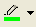
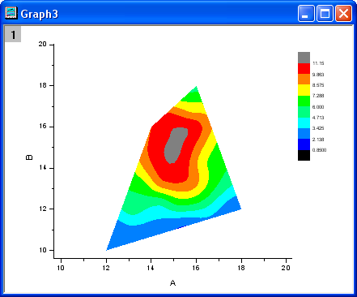

等高線とカラーマップ
等高線カラーマップ
概要
Originは、四角形、円形(極座標)、三角形(ターナリ)の等高線図をサポートしています。四角形の等高線図では、データを行列形式またはXYZのワークシート形式にすることができます。極座標等高線図はワークシート内の、R Z または R Z 形式の3列から作図できます。
三点等高線図はX・Y・Z・Z形式のデータから作図します。この2つ目のZは4つ目のパラメータを含んでおり、このパラメータはXYZ三点図内において高さの値を示しています。
等高線図を編集するため、数多くのオプションが利用できます。例えば、主副等高線レベルの設定、主レベルのみの等高線の設定、カラーパレットの適用、さらにカスタム境界の制御（ワークシートから直接作成した等高線の場合）などがあります。
学習する項目
このチュートリアルでは、以下の項目について説明します。
- 行列に値をセットし、等高線図を作成する
- レベル、等高線、カラーマップを編集する
- 等高線からデータを抽出する
- XYZデータから等高線図を作成する
- カスタム境界を使用する
行列から等高線図を作成する
- 新しい行列ウィンドウを作成するには新しい行列ウィンドウボタン
 をクリックします。マウスでカーソルを行列左上角に移動し、カーソルの形状が下図のようになったら、クリックして行列全体を選択します。
をクリックします。マウスでカーソルを行列左上角に移動し、カーソルの形状が下図のようになったら、クリックして行列全体を選択します。
行列の次数をセットするには右クリックして、コンテキストメニューから行列次数/ラベルの設定を選択します。XYマッピングタブでは、以下の図のように設定を変更します。
- データを行列に入力するには、行列ブックを選択後に右クリックします。コンテキストメニューから行列のセル値の設定を選択し、値の設定ダイアログを開きます。計算式編集ボックスにi*sin(x) - j*cos(y) と入力し、OKボタンをクリックして、データを生成します。行列は次のようになります。
- 行列の各データポイントは2種類の異なるインデックスに対応しています。1つは、行と列のインデックスです。もう1つは、X座標とY座標です。メインメニューで表示：X/Yを表示と選択すると、XとYの座標を確認できます。
- また、表示：イメージモードを選択すると、行列のイメージモードが確認できます。
- イメージモードから切り替えるには表示：データモードと操作します。行列をアクティブにして、メニューから作図：等高線図：カラーマップ等高線と選択して等高線を作図します。 下図のようなグラフになります。
レベル、等高線、カラーマップを編集する
カラースケールを変更したり、ラベルを追加するような、等高線のあらゆる要素をOriginでは簡単に編集できます。
- Graph1をアクティブにして、グラフ操作：スピードモードを選択してダイアログを開きます。スピードモード = オフと設定してOKをクリックします。
- Graph1の等高線プロットをクリックし、表示されたミニツールバーでレベルの設定ボタンをクリックします。レベルの設定ダイアログで、最小/最大の検索ボタンをクリックし、 主レベル数を8、副レベル数を32に設定します。OKボタンをクリックします。
- 等高線プロットをクリックし、表示されたミニツールバーでパレットボタンをクリックします。ドロップダウンから Rainbow パレットを選択します。
- 等高線の線の上を2回クリック(シングルクリック2回)してそのレベルの全ての線を選択します。同じレベルの等高線を選択したらスタイルツールバーの線/境界色ボタン を使って、色を緑に変更します。 また、同じツールバーの線/境界幅ボタン を使って、太さを3に変更します。
- 1つの等高線の線を3度クリックして、その線だけが選択されていることを確認して(そのレベルの全ての等高線ではなく)右クリックします。等高線ラベルの付加を選択してラベルを追加します。
- 等高線を2回クリックして選択し、右クリックして等高線データの抽出を選びます。Originが、等高線データをワークシートに抽出します。次の図は、ワークシートのデータの一部です。
XYZデータから等高線図を作成する
Originは、中間的な行列を作成することなく、ワークシート内のXYZデータから直接等高線図を作成することができます。等高線の計算と描画には、ドローネー三角分割法が使われています。
- 新しいワークブックを用意します。ヘルプ: フォルダを開く: サンプルフォルダを選択して、サンプルフォルダを開きます。このフォルダ内のMatrix Conversion and Griddingサブフォルダにある3D XYZ.datを探します。空のワークシートにファイルをドラッグアンドドロップしてインポートします。
- 3番目の列を選択し、右クリックして、「列XY属性の設定：Z列を選択します。 作図：等高線図：カラーマップ等高線 を選択して、次の図のようなグラフを作成します。

三角形分割グリッドを表示する
- データから等高線図を作成するのに使われた三角形分割グリッドを表示します。個々のデータポイントは、グリッドの結節点(交点)または頂点にあります。
- 新しいワークブックを用意します。ヘルプ: フォルダを開く: サンプルフォルダを選択して、サンプルフォルダを開きます。このフォルダ内のMatrix Conversion and GriddingサブフォルダにあるXYZ Random Gaussian.datを探します。空のワークシートにファイルをドラッグアンドドロップしてインポートします。
- 3番目の列を選択し、右クリックして、「列XY属性の設定：Z列を選択します。作図：等高線図：カラーマップ等高線を選び、等高線グラフを作成します。
- 等高線図をダブルクリックして、作図の詳細ダイアログを開きます。カラーマップ/等高線タブで、線ヘッダをクリックして、等高線ダイアログを開きます。主レベル上のみ表示のチェックを外し、全て隠すを選んで、全等高線を非表示にします。OKボタンをクリックして、ダイアログボックスを閉じます。グリッド表示とデータポイント表示チェックボックスを選択します。OKをクリックして、作図の詳細ダイアログボックスを閉じます。
グリッドを重ね合わせた等高線は、下図のようになります。
カスタム境界を適用する
カスタム境界は、XYZデータから直接作成した等高線図に適用することができ、同じワークシートの別の列に境界用のデータセットを用意します。この機能は、オブジェクトのアウトラインを定義する境界データがある時に役立ちます。例えば、エンジンの輪郭と等高線を使用してエンジンの温度を表示ようなことができます。
-
前のサンプルでのXYZ Random Gaussian.dat ファイルで作成したワークシートと等高線図を続けて使用します。
- XYZRandomGaus ワークシートに移動し、列の追加ボタン
 を2回クリックし、列を2つ追加します。これら2列を選択し、右クリックします。コンテキストメニューから列XY属性の設定：XY XYを選択して、以下のようなデータを入力します。
を2回クリックし、列を2つ追加します。これら2列を選択し、右クリックします。コンテキストメニューから列XY属性の設定：XY XYを選択して、以下のようなデータを入力します。
- 等高線図をダブルクリックして、作図の詳細ダイアログを開きます。右側パネルで、等高線設定タブを選択します。次の図のようにダイアログを設定し、等高線図の境界を編集します。カラーマップ/等高線タブのグリッド表示とデータポイント表示チェックボックスのチェックを外してください。OKをクリックして、作図の詳細ダイアログボックスを閉じます。
等高線図は次のようになります。
- 
 | Origin 2018 SR0以前は、カスタム境界を適用すると境界マージンに不完全な色塗りが生成されることがありました。これはバージョン2018で改善されました。システム変数 @TCSMを使って、以前の不具合現象を修正することが可能です。
|